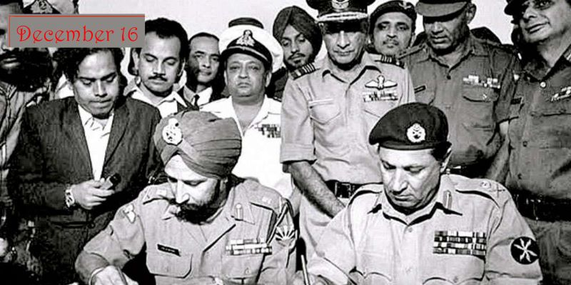

History of Old Dhaka
Firstly, a look into Dhaka, the capital of Bangladesh
I have great childhood memories of spending summers there
Victory Day and the Independence War
Bangladesh as a country is only actually 50 years old.
On Decemmber 16, 1971, Bangladesh won its independence from Pakistan.
